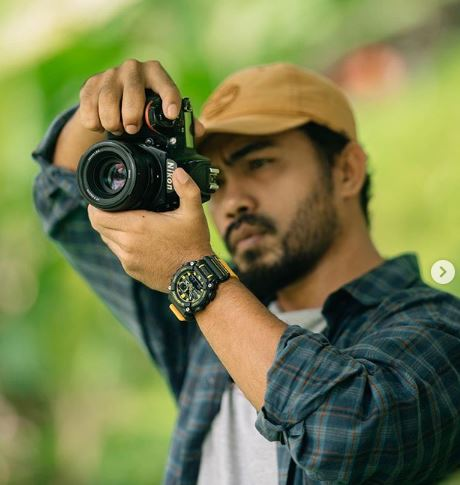

This is the section where I show the people who responsible in developing my interest in photography

NUDDEN HASHIM (TKDNXV)
Nudden Hashim as known as Abeden is first inspiration that have bought my interest into photography. His photos full with stories and souls have capture my heart to capture things with emotions and feelings. He has taught me that a photograph is not only a photograph but everything behind it has its meaningful stories. Abeden has been a photographer since more than 10 years, throught ups and downs, he never gave up his passion in photograpgy. Although I see photography as only a hobby, but inspiration that has been show by Abeden has give me spirit to keep loving photography even though I don't have any professional skills in photography. Because of Abeden, I learn many things in photography just by scrolling his social medias. He really loves to share things that he loved. He always say, cari cantik dalam setiap yang kau lihat, pasti gambarmu akan penuh dengan cerita bermakna.
Khairul Amin is one of the photographer that I always look up to because he is a very talented photographer among all the photographer that I know. He doesn't need any professional camera to show to people that he can take pictures. He only use his mobile phone to take picture and the result is as same as the pictures taken by professional camera. It amazes me how his eyes can see beauty in everything and by only using his phone, he can capture it beautifully. I have met him in person and talk to him about photography and from the way he talks, he really into his passion in photography. He's so kind and really love to taught others how to take beautiful picture with the right angle and perspective. I have crush on him really adore him. He's a cute human being!